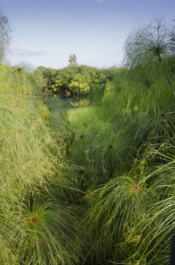

ϫⲟⲟⲩϥ S, ϭⲟⲙϥ, -ⲛϥ B nn m, papyrus: Job 8 11 SB (cit P 44 117 بوص), ib 40 16 SB, Is 19 6 SB -ⲙϥ πάπυρος; Mor 41 181 S magician casts on fire ⲟⲩϣⲏⲧⲉ ⲙⲛⲟⲩϫ. & other plants. Cf ⲧⲣⲃⲏⲓⲛ.

ϫⲟⲟⲩϥ S, ϭⲟⲙϥ, -ⲛϥ B nn m, papyrus: Job 8 11 SB (cit P 44 117 بوص), ib 40 16 SB, Is 19 6 SB -ⲙϥ πάπυρος; Mor 41 181 S magician casts on fire ⲟⲩϣⲏⲧⲉ ⲙⲛⲟⲩϫ. & other plants. Cf ⲧⲣⲃⲏⲓⲛ.
ϭⲟⲙϥ, ϭⲟⲛϥ B v ϫⲟⲟⲩϥ.
ϭⲟⲛϥ, ϭⲟⲙϥ B v ϫⲟⲟⲩϥ.